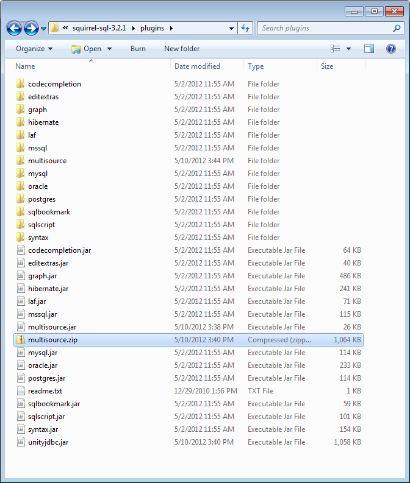
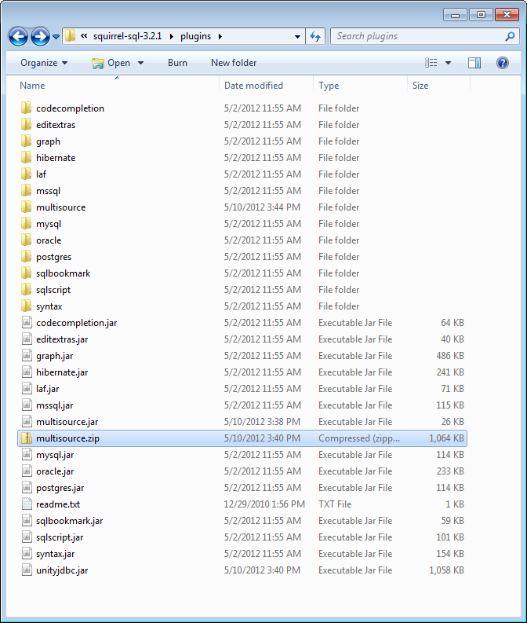
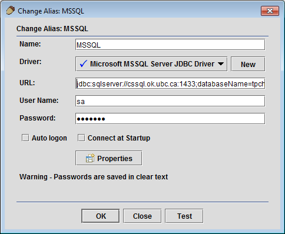
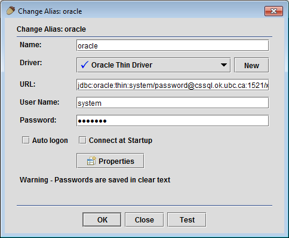

| Before Unzip | After Unzip |
|---|---|
 |  |

The multiple source query plugin allows SQuirreL users to create a virtual data source that may consist of multiple data sources on different servers and platforms. The user can enter one SQL query to combine and join information from multiple sources.
| Before Unzip | After Unzip |
|---|---|
|  |
| Microsoft SQL Server | MySQL |
|---|---|
|  |  |
| Oracle | Postgres |
|  |  |


The UnityJDBC driver used to perform the virtualization will also translate functions that are not implemented by certain sources. For example, MSSQL does not support TRIM(), but you can do the same result using RTRIM(LTRIM()). Unity will automatically translate a TRIM() function specified in a MSSQL query to the correct syntax supported by the database.
This translation is supported for common databases and can be freely extended by user-defined functions and translations for each database dialect.
The plugin source code, like all of SQuirreL, is released under the GNU Lesser General Public License. The UnityJDBC virtualization driver is released under a commercial license. However, the UnityJDBC driver included in the plugin is fully functioning with no time limits allowing an unlimited number of sources and queries. The only limitation is the size of the result set is limited to the first 100 rows. (Note there is no limit on the number of rows extracted from each source. So select count(*) from table with a 1 million row table is fine as it only returns one result row.) Use LIMIT 100 to get the first 100 results of a query.
For More Information and Technical Support Contact:
Dr. Ramon Lawrence, ramon.lawrence@ubc.ca, 250-807-9390
Associate Professor, Computer Science, University of British Columbia Okanagan, Canada
UnityJDBC driver information: www.unityjdbc.com